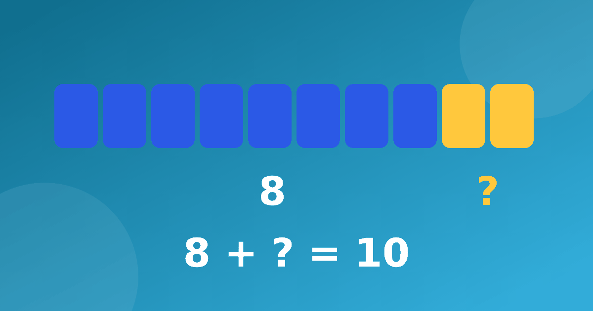

Сколько не хватает до десятка: учим ребёнка видеть пары

Если у счёта в уме есть главный фундамент, то это десяток. Ребёнок, который мгновенно видит, что к семи нужно прибавить три, чтобы получить десять, легче справляется и со сложением через разряд, и с вычитанием. В этой статье разберём, как этот навык формируется, какие игры помогут и где его применять.
Что значит дополнить число до десяти
Дополнение до 10 — это поиск недостающего слагаемого. Мы берём число и спрашиваем, сколько нужно прибавить, чтобы получился ровно десяток. Для шести это четыре, для девяти один, для пяти снова пять. Все пары полностью выглядят так.
- 1 и 9;
- 2 и 8;
- 3 и 7;
- 4 и 6;
- 5 и 5.
Каждая пара работает в обе стороны: если вы знаете, что 3 и 7 дают десять, то знаете и 7 и 3. Поэтому всю таблицу можно запомнить гораздо быстрее, чем кажется. Если пары состава чисел ещё не вполне знакомы, начните со статьи состав числа без карточек.
Как спрашивать: сколько не хватает до десятка
Формулировка вопроса важна. Вместо абстрактного «найди слагаемое» используйте разговорный вариант: если на столе четыре яблока, сколько их нужно добавить, чтобы стало десять? Ребёнок видит ситуацию и сам достаёт недостающие. Так число превращается в действие.
Приёмы этого этапа не должны быть сложными. Ребёнок слышит число и отвечает на один и тот же вопрос, сколько не хватает до 10. Сначала допустима пауза, потом ответ ускоряется сам, без давления. Скорость приходит как следствие понимания, а не как цель.
Хорошая тренировка на пальцах. Попросите показать все десять, потом загнуть три. Сколько осталось? Семь. Три и семь составляют десять. Затем меняйтесь ролями, и пусть загибает пальцы взрослый, а ребёнок угадывает, сколько их надо разогнуть обратно. Через несколько таких подходов пальцы уже не понадобятся.
Пары чисел для десятка в играх
Пары чисел для десятка отлично запоминаются там, где есть интрига. Не нужно запоминать их в виде списка, лучше использовать игры.
- Домино на десять. Выложите карточки с числами от одного до девяти, а ребёнок подбирает пару так, чтобы получился десяток.
- Игра в магазин. Вы продаёте товар за десять монет, а ребёнок платит часть и называет, сколько осталось доплатить.
- Мяч. Вы кидаете мяч со словами «семь», ребёнок ловит и отвечает «три».
Игры лучше чередовать, потому что одна и та же быстро надоедает. Достаточно трёх или четырёх минут. Хорошо также вспоминать пары по ходу дня: в подъезде на лестнице, в очереди, на прогулке.
Зачем десяток нужен в сложении и вычитании
Самое важное применение — переход через десяток. Возьмём пример 7 + 5. Ребёнок думает, что до десяти семи не хватает трёх, берёт эти три из пятёрки, получает десять, а оставшиеся два прибавляет. Выходит двенадцать. Для 9 + 4 схема та же: берём одну единицу, получаем десять, добавляем оставшиеся три и приходим к тринадцати.
С вычитанием работает такой же ход в обратную сторону. Например, для 14 − 6 сначала вычитаем четыре и доходим до десяти, потом вычитаем оставшиеся два и получаем восемь. Подробно приём описан в статье сложение через десяток для детей, а похожие трюки с числами пять и десять встретятся при изучении умножения на 5 и 10.
Как закреплять без перегрузки
Хорошо вести небольшой дневник побед. Пусть ребёнок отмечает звёздочкой день, когда он назвал все пять пар без подсказки. Через пару недель такая страничка приятно выглядит и показывает, что прогресс есть, пусть и медленный.
Навык закрепляется постепенно. Достаточно нескольких минут в день, зато без пропусков. Если ребёнок сбивается, вернитесь к предметам и пальцам, это не шаг назад, а страховка. Чтобы тренировка не превращалась в скуку, вводите новые игры раз в несколько дней.
Полезно иногда устраивать мини-проверку на ходу. Назовите число от одного до девяти и попросите ответить сразу, без счёта по пальцам. Если ответ не пришёл, не торопите и не подсказывайте: дайте ребёнку несколько секунд подумать, а потом вместе проверьте по десяти клеткам. Так он учится опираться на собственные рассуждения, а не на подсказку взрослого, и постепенно привыкает доверять себе.
Если хочется разнообразия, подключайте тренажёр «Устный счёт». В нём есть игра «Дай сдачу», которая превращает счёт в занятие с деньгами, а сложные примеры возвращаются позже для повторения. Для первоклассника также будет полезен разбор устного счёта в первом классе.